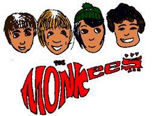

The Monkees are an American rock and pop band originally active between 1966 and 1971,
with reunion albums and tours in the decades that followed.
The band formed in Los Angeles in 1965 by Bob Rafelson and Bert Schneider for the American television series The Monkees which aired from 1966 to 1968.
The musical acting quartet was composed of Americans Micky Dolenz, Michael Nesmith, and Peter Tork; and British actor and singer Davy Jones. The band's music was initially supervised by producer Don Kirshner, backed by the songwriting duo of Tommy Boyce and Bobby Hart.
The four actor-musicians were allowed only limited roles in the recording studio for the first few months of their five-year career as "the Monkees".
This was due in part to the amount of time required to film the television series.[1] Nonetheless, Nesmith did compose and produce some songs from the beginning, and Peter Tork contributed limited guitar work on the sessions produced by Nesmith.
They eventually fought for the right to collectively supervise all musical output under the band's name. The television show was canceled in 1968, but the band continued to record music through 1971.Probably the band’s best album, after their hits compilation,The Monkees’ modest promise of Good Times! is generously borne out in a series of songs custom-built by simpatico songwriters like Andy Partridge, Noel
Greatest Hits of the Monkees is a 1982 greatest hits,Compilation album of songs by the Monkees, assembled and released by Arista Records. Rather than featuring strictly hit singles, the collection instead featured music from their television series, which was still airing in syndication around the US.
This album marks the compilation debut of chart hits "Words" and "The Girl I Knew Somewhere," which had been overlooked on the previous greatest hits albums. ("Somewhere" had appeared on a compilation by the Laurie House publishers that was only available as mail order, and the Australian compilation Monkeemania also included the song.
This was the song's first U.S. release on an album available in record stores.